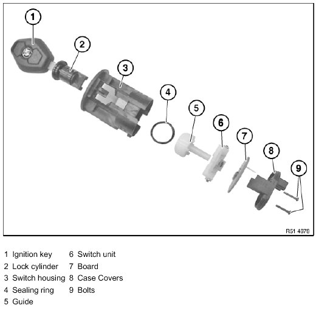
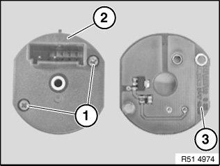
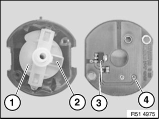
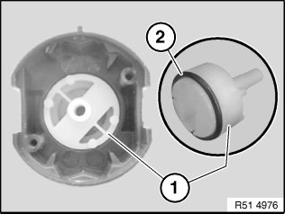
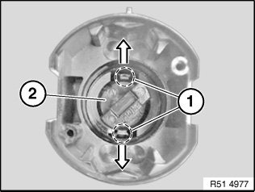

51 16 342 Removing and Installing/Replacing Lock Cylinder For Passenger Airbag Deactivation
51 16 342 Removing and installing/replacing lock cylinder for passenger airbag deactivation
Individual parts, switch for passenger airbag deactivation


Necessary preliminary tasks:
- Remove switch for passenger airbag deactivation

Release screws (1).
Remove housing cover (2) and PCB (3) underneath.

Remove switch unit (1) in upward direction.
Installation:
Switch unit (1) can only be installed in one position.
PCB (4) can be inserted turned through 180°.
Position of magnet sensor (3) of PCB (4) must match up with permanent magnet (2) of switch unit (1).

Remove guide (1) in upward direction.
Installation:
Guide (1) can only be installed in one position.
Fit seal (2) on guide (1) and insert in switch housing.
IMPORTANT: Ignition key must be inserted in lock cylinder, otherwise this will be destroyed when removed.

Insert ignition key in lock cylinder (2).
Carefully release catches (1) in outward direction and press out lock cylinder (2) with ignition key.
Installation:
Lock cylinder (2) can only be inserted in "ON" or "OFF" switch position.
Lock cylinder